+45dias longe da rotina
O tempo que ele precisou ficar fora da rotina que mais fazia sentido pra ele. Sem prova, sem bloco de treino, sem cronômetro.
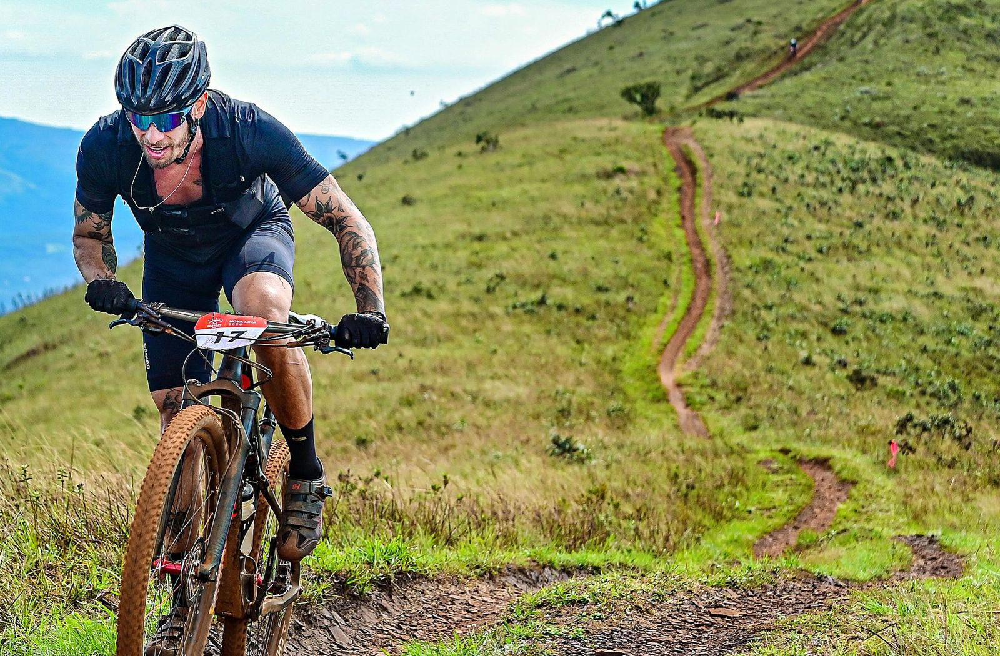
Atleta de Endurance — MTB · Trail · Duathlon
Yuri Mignacca corre, pedala e cozinha. Em 2026, o corpo pediu pausa — e ele decidiu contar essa história em vez de escondê-la.
Role
E, pela primeira vez, estou entendendo que performance sem saúde não vale a pena.Yuri Mignacca — agosto de 2026
A História
Ato I — O Limite
A conta chegou de uma vez. Treino de alta performance de manhã, cozinha profissional à tarde, vida social à noite — e nenhum espaço em branco no meio. Yuri Mignacca vinha empilhando três rotinas de tempo integral sobre um corpo só, convencido de que descanso era tempo perdido.
Até o dia em que o peito apertou de um jeito que não parecia treino. Ele publicou o relato com o título que qualquer atleta reconhece e ninguém quer dizer em voz alta: "achei que tava infartando". Não era o coração falhando. Era o corpo cobrando a conta de meses sem pausa — exaustão física acumulada, do tipo que não se resolve com um dia de folga.
O que aconteceu depois disse mais sobre ele do que qualquer resultado de prova. Em vez de sumir e voltar com uma foto de pódio, ele abriu o processo inteiro em público — o susto, o diagnóstico, a frustração de parar no meio de uma temporada.
Esse foi o post de maior engajamento da história do perfil: 491 curtidas e 138 comentários numa base de 5.209 seguidores — 12,1%, cerca do dobro da média dele. A audiência não respondeu ao atleta performando: respondeu ao atleta sendo honesto.
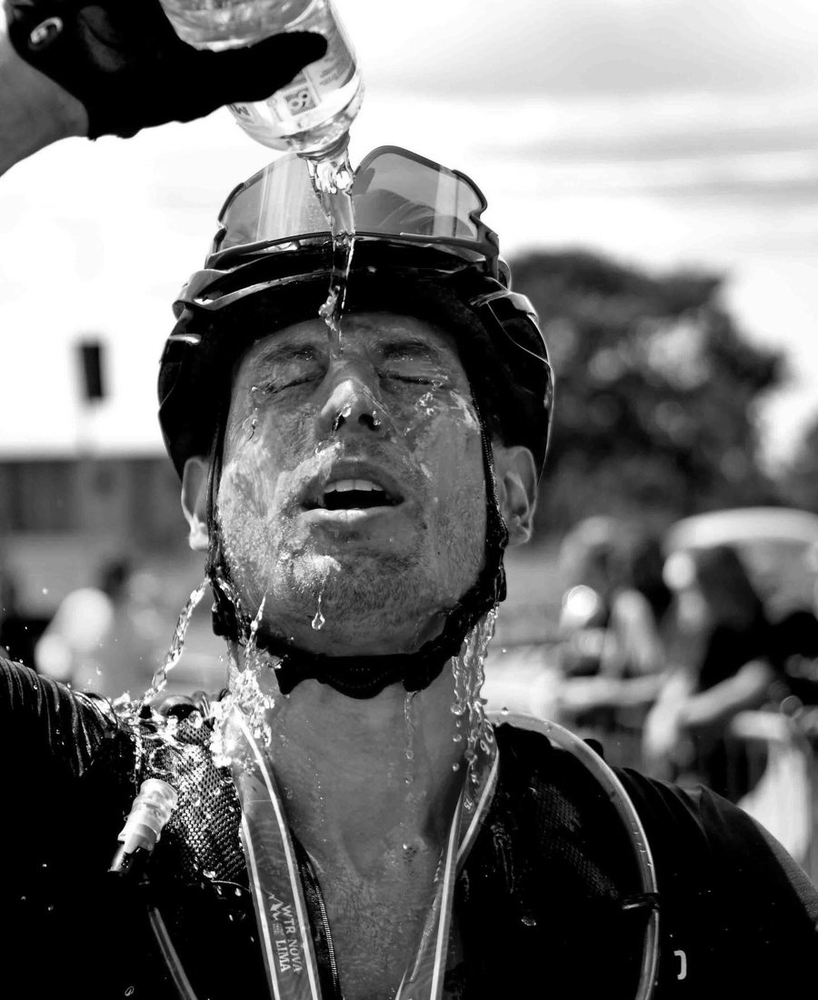
Ato II — A Pausa
O tempo que ele precisou ficar fora da rotina que mais fazia sentido pra ele. Sem prova, sem bloco de treino, sem cronômetro.
Nas palavras dele, a parte difícil não foi perder condicionamento. Foi esperar exames, esperar respostas, esperar o momento certo de voltar.
A cozinha e a câmera assumiram o espaço que a prova deixou vago. A pausa do atleta virou temporada dos outros dois ofícios.
Voltando de leve. Mas voltando.
Próximo capítulo: Desafio Avante Entre Serras — Acuruí, Itabirito/MG · 21 a 23 de agosto de 2026
Atleta
MTB, trail running e cross duathlon. A especialidade é justamente o que cansa duas vezes: correr subindo e pedalar no mesmo fim de semana.
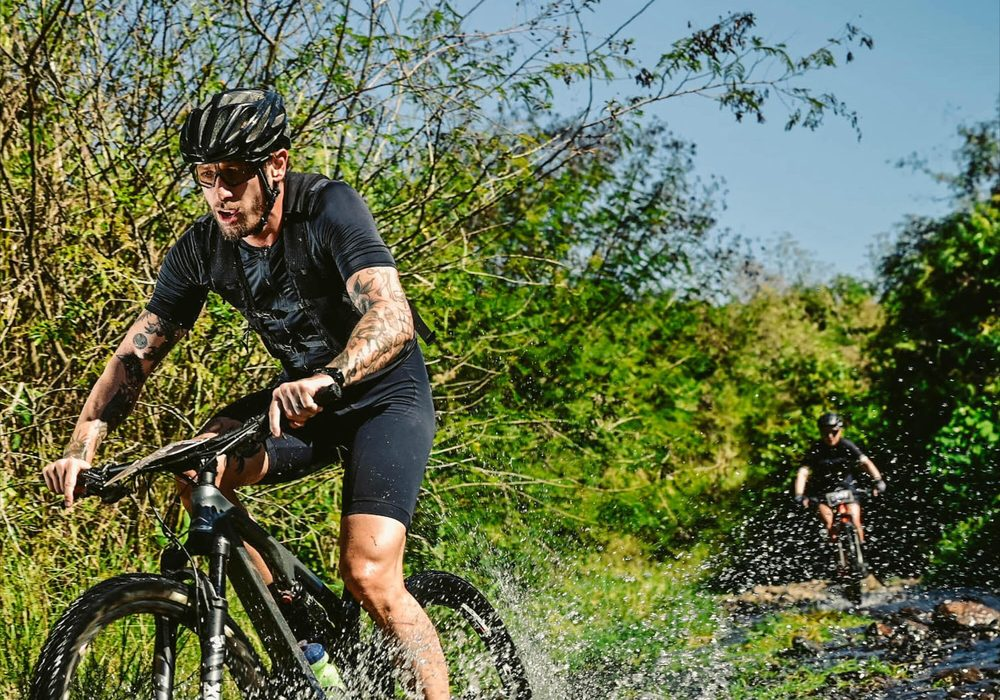
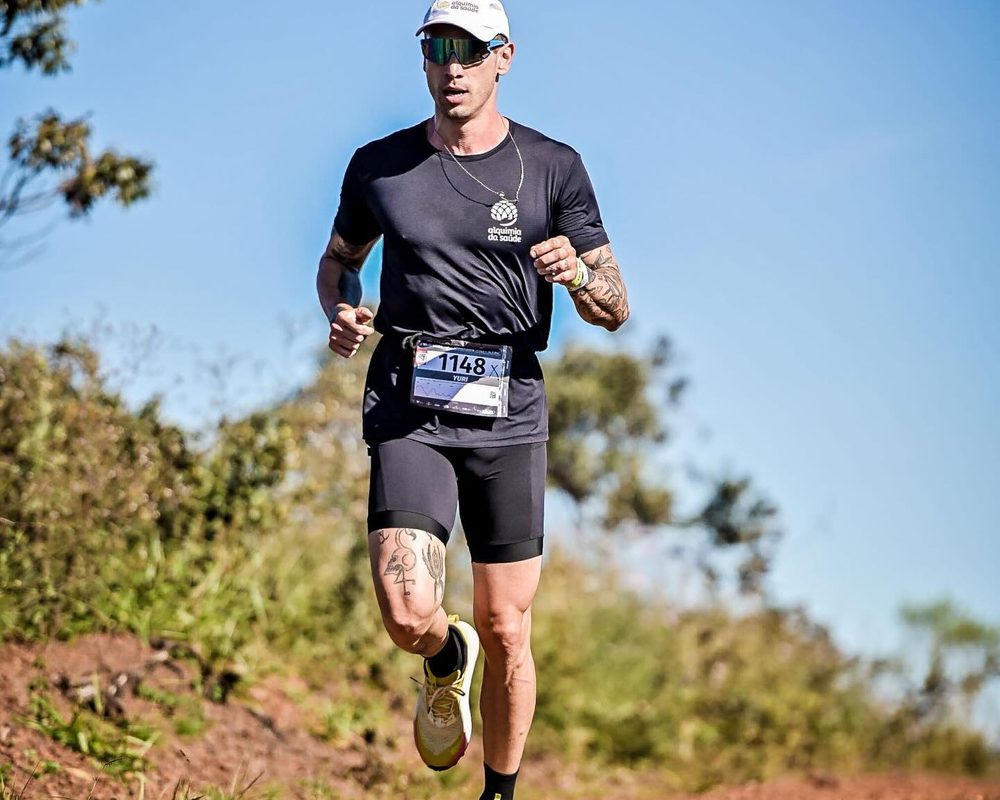
World Trail Races · Nova Lima — MG
Trail short com muita subida e cascalho, no quintal de casa.
Cross Duathlon
Corrida e MTB no mesmo dia, sem intervalo para negociar.
Segundo dia de prova
A etapa que decidiu a somatória — depois de já ter corrido no dia anterior.
Somatória dos dois dias
Resultado que mede o que ele faz de melhor: sustentar performance no acúmulo.
Brasil Ride · Botucatu — SP
O maior festival de mountain bike do Brasil: subida, estradão, trilha e trechos técnicos, dia após dia.
Sertões Bike · Nova Lima — MG
Resultado entre os primeiros da categoria numa das provas mais duras do calendário.
Nutrição e performance
Patrocinador oficial — parceria ativa, citada em cada resultado.
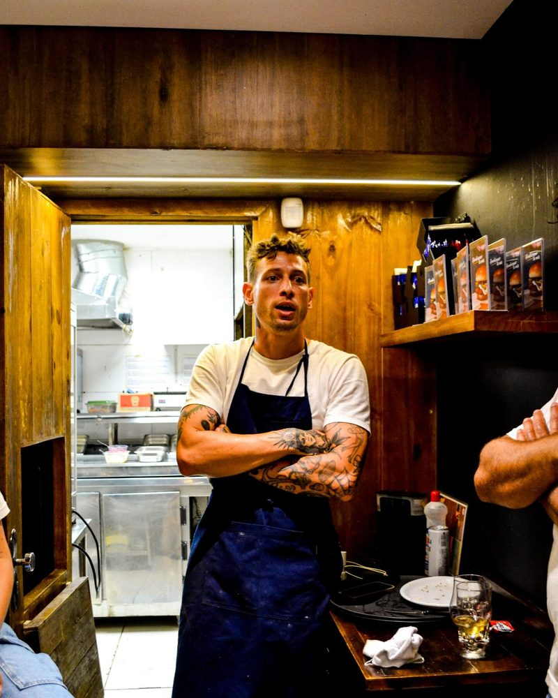
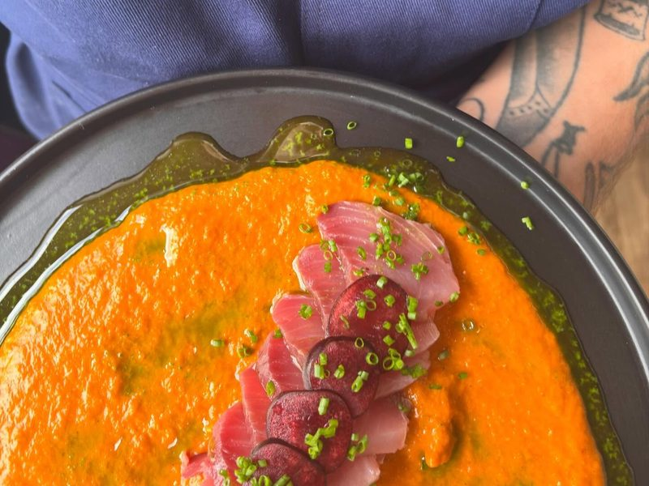
Cozinha
Cozinheiro de ofício, não de hobby. A mesma disciplina que organiza um bloco de treino organiza uma praça de cozinha profissional — e virou negócio: a Duppla Cozinha, assinada com sócios, é o que está linkado na bio dele antes de qualquer coisa sobre esporte.
De lá saem jantares autorais, criação de menu a convite de casas de Belo Horizonte e collabs — a mais recente com a Hamburgueria 182 Savassi. É o lado do trabalho que conversa direto com performance. Combustível, só que com capricho.
Modelo
Trabalha como modelo em campanhas de vestuário técnico — e a mais recente é o editorial APEX#2, com a Nomad Sports. Não é um portfólio à parte: é o mesmo corpo que treina, o mesmo rosto que apareceu cansado nos posts da pausa, fotografado por quem precisa que a roupa pareça real em quem realmente usa.
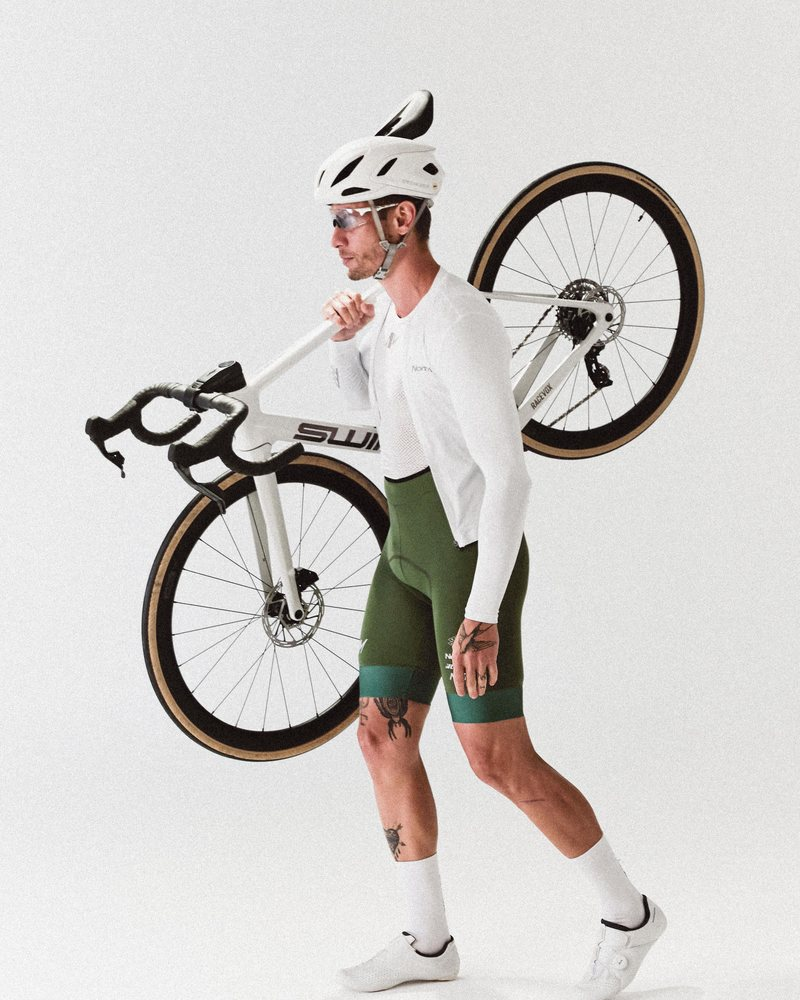
Fora de prova
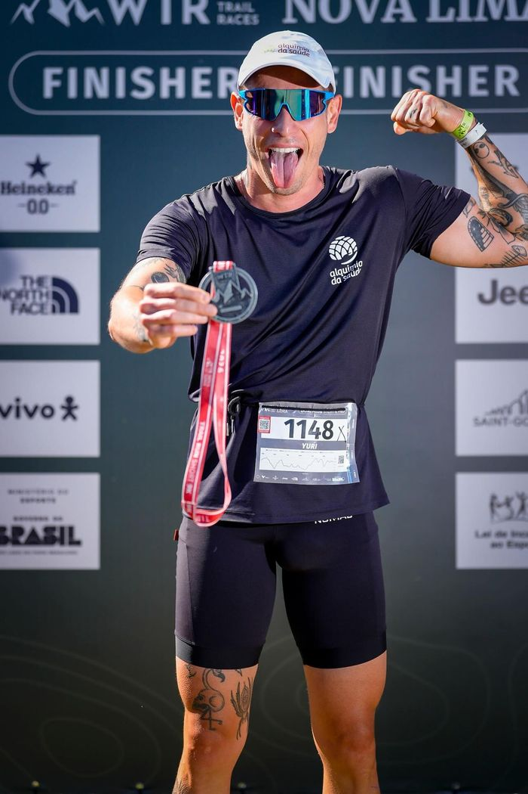
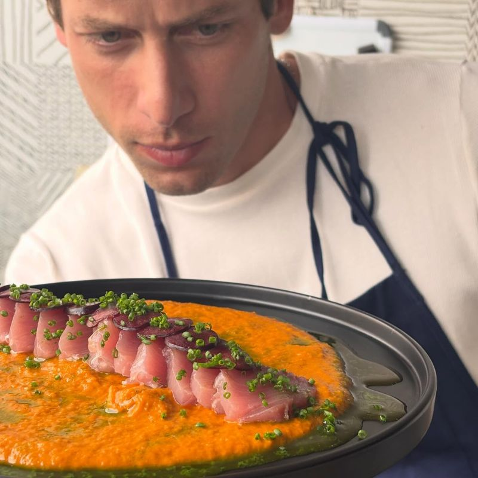
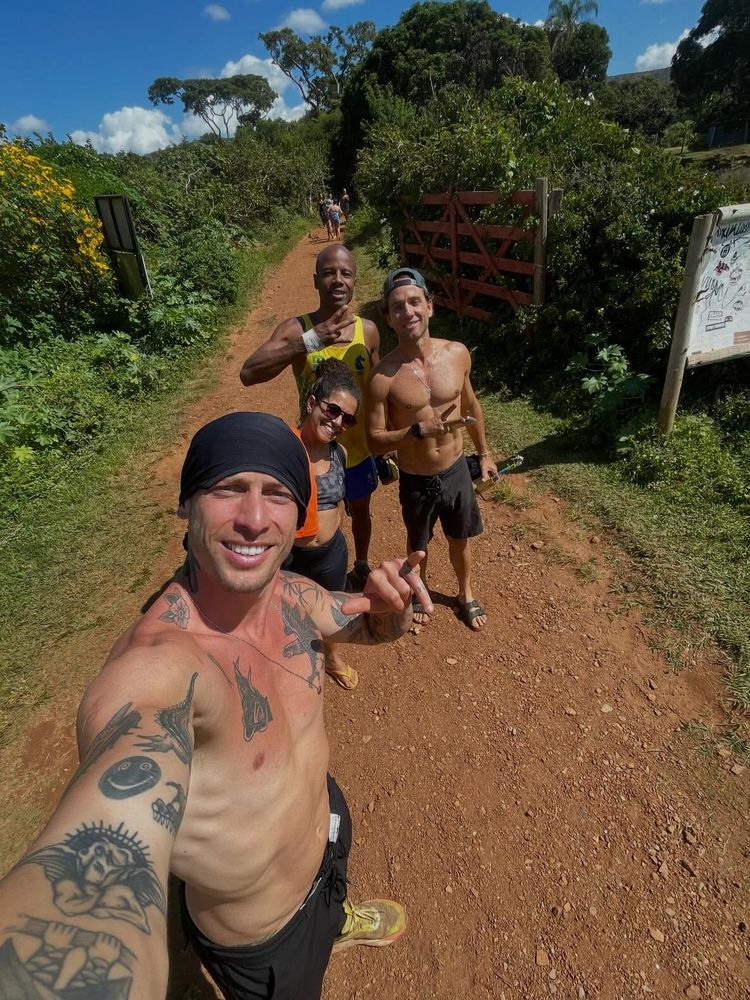
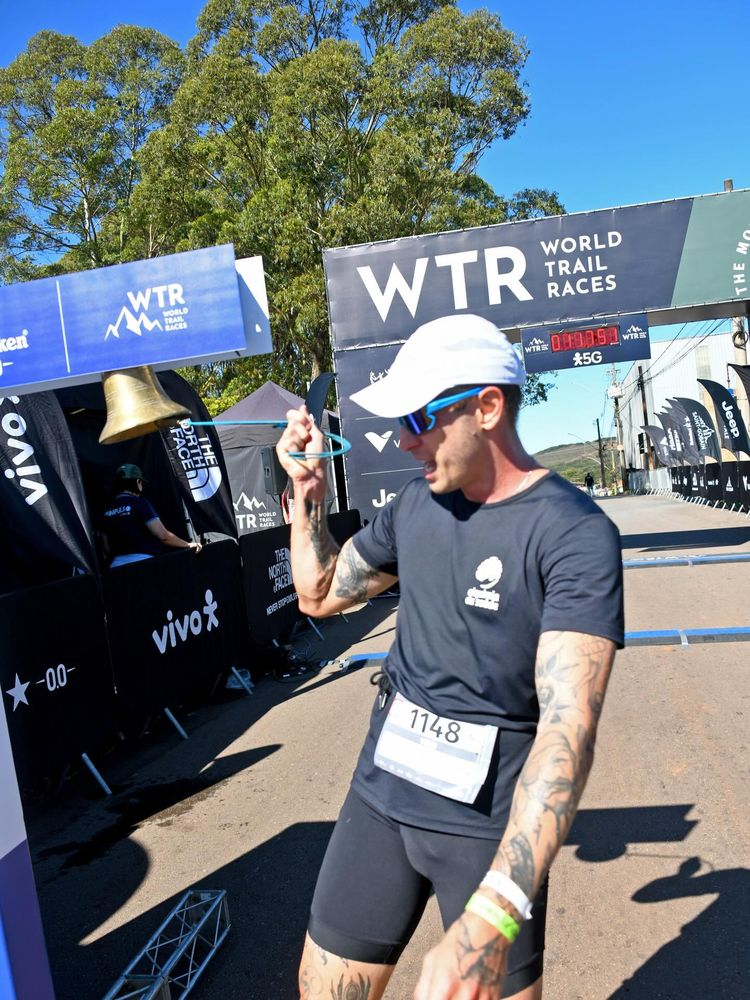
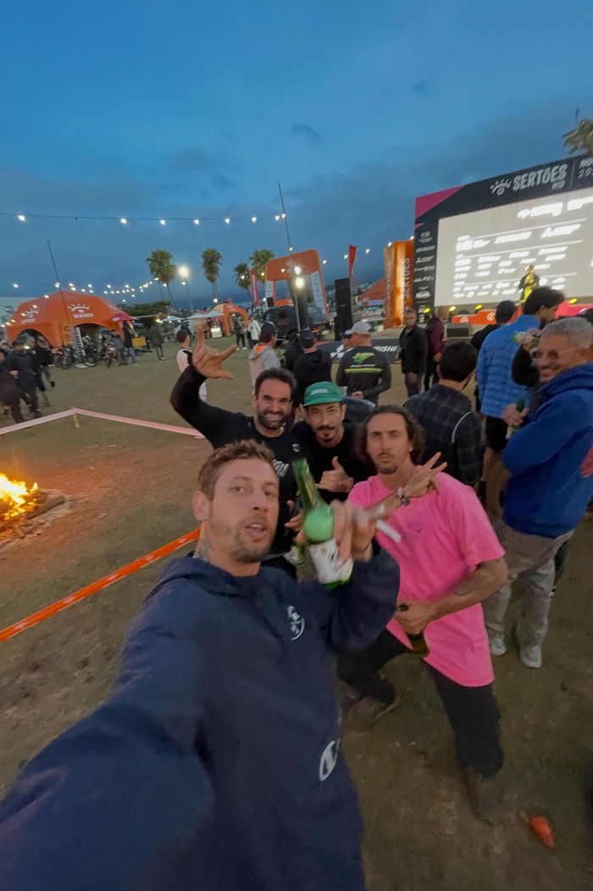
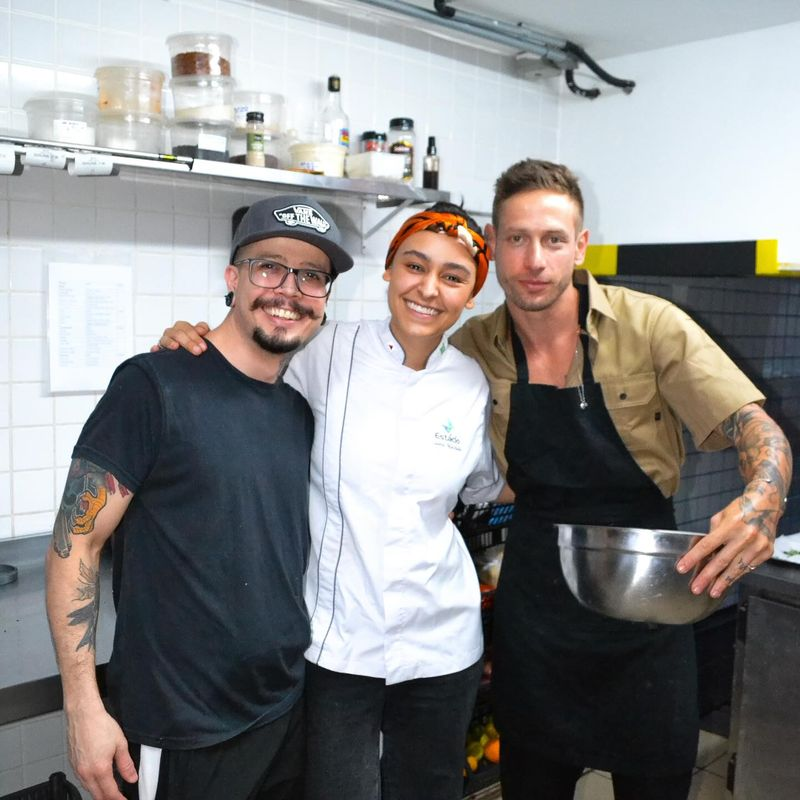
Parcerias
Estas são as marcas que acompanham essa história de perto:
Aberto a conversas com marcas de nutrição, performance, bike, vestuário técnico e alimentação. O que está em jogo aqui não é alcance bruto — é uma audiência que responde ao processo, não só ao resultado.